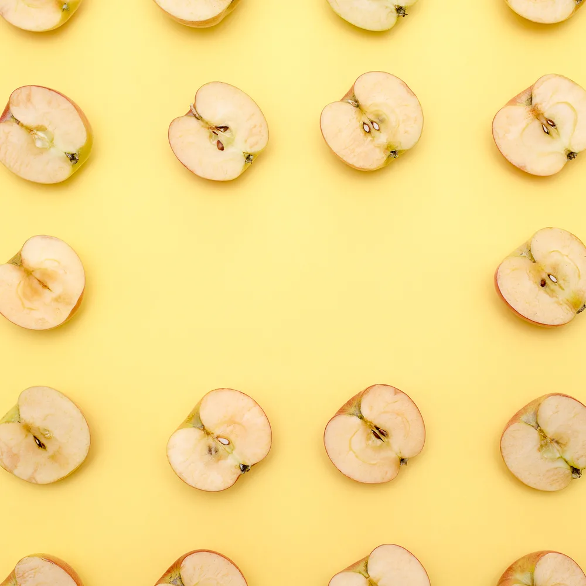

Некоторые начинающие дизайнеры и большинство людей используют слова «принципы» и «элементы» графического дизайна как взаимозаменяемые. Но они ошибаются, ведь это далеко не синонимы.
Принципы – способы размещения элементов в творческой работе. К ним относятся баланс, близость, выравнивание и многие другие термины, которые мы рассмотрим далее.
Над каким бы проектом вы ни работали, баланс, или расположение элементов, – один из важнейших принципов графического дизайна. Он подразумевает придание визуального веса разным элементам с помощью масштаба, цвета, контраста и других приемов. Баланс может быть как симметричным, так и асимметричным.  Симметричный баланс – это когда визуальный вес объектов равномерно распределен горизонтально и вертикально. Он помогает создать аккуратный и упорядоченный дизайн. В случае с асимметричным балансом вы можете экспериментировать с визуальным весом и базовыми элементами графического дизайна, чтобы привлечь внимание аудитории.
Близость – принцип графического дизайна, который объединяет связанные элементы. Он позволяет избежать визуального беспорядка и делает дизайн приятным для восприятия. Вы можете добиться близости в дизайне с помощью правильного использования пространства в макете.
Еще один принцип, который стоит учитывать, – выравнивание. По сути это искусство внесения логики в композицию путем выстраивания объектов по невидимым линиям. Есть два типа выравнивания:
-по краю;
-по центру.
Выравнивание по краю – размещение элементов дизайна относительно края страницы. Когда элементы выстроены по правой или левой стороне, это горизонтальное выравнивание. Вертикальное выравнивание означает, что объекты размещены по верху или низу страницы. При выравнивании по центру объекты выстроены по центральной невидимой линии по горизонтали или вертикали. В целом выравнивание показывает, что решения, которые принимает дизайнер, не случайные. Работы с продуманным выравниванием выглядят более профессионально.
Визуальная иерархия – принцип дизайна, который заключается в присвоении элементам определенного уровня важности. Этого можно достичь, экспериментируя с типом, размером, текстурой и цветом. Представьте, что вы смотрите на постер к фильму. У того, кто его придумал, был замысел, что сначала вы прочтете название, потом оцените изображение и наконец обратите внимание на детали. Так визуальная иерархия работает в любом дизайне.
Если вы хотите добиться гармонии в дизайне, без принципа повторения не обойтись. Он подразумевает использование одного и того же элемента во всей работе для придания ей связности. Но не стоит экспериментировать сразу со многими элементами дизайна, ведь это может сделать вашу работу хаотичной.
Используйте контраст, чтобы выделить элементы и текст. С помощью этого принципа вы можете разграничивать элементы дизайна, делать акцент и придавать объектам визуальный вес. Контраста можно добиться, выбирая противоположные цвета, сочетая большой и маленький шрифт и экспериментируя с различными текстурами. Применяя его вместе с принципом визуальной иерархии, вы сможете легко донести свой месседж аудитории.
-задать особое настроение;
-создать баланс и гармонию;
-передать символы;
-донести месседж;
-подчеркнуть идею.